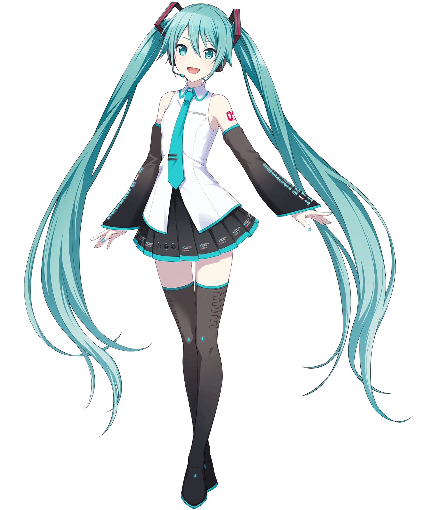

"I can see this future is right now, 'cause my voice is always going around."
Hatsune Miku (初音ミク) é um software sintetizador de voz desenvolvido pela empresa japonesa Crypton Future Media, lançado originalmente em 31 de agosto de 2007 para o motor Vocaloid 2, da Yamaha Corporation. Concebida como o primeiro produto da linha Character Vocal Series (código CV01), ela se tornou o principal ícone global da síntese vocal e da cultura musical colaborativa na internet, dando origem a centenas de milhares de músicas, videoclipes, jogos, shows com projeção em palco e até mesmo episódios inusitados envolvendo o relacionamento entre humanos e personagens virtuais.
Hatsune Miku (初音ミク)

Aparência
Estréia
Aparições
Criadores
Criador Original
Dublador
Data de concepção
Informação Biográfica
Pseudônimos
Gênero
Pronomes
Espécie
Alinhamentos
Ocupação
Amizades
Histórai e Desenvolvimento
Antes do lançamento de Hatsune Miku, os sintetizadores de voz disponíveis no mercado eram comercializados como ferramentas técnicas voltadas apenas para músicos profissionais, sem apelo visual forte. A Crypton Future Media decidiu mudar essa abordagem ao criar uma personagem de anime para representar o banco de voz, buscando atrair produtores independentes e usuários da internet. A voz da personagem foi criada a partir de amostras gravadas pela atriz de voz japonesa Saki Fujita, enquanto o design visual ficou a cargo do ilustrador Kei Garou (KEI). Seu nome combina as palavras japonesas Hatsu (primeiro), Ne (som) e Miku (uma leitura poética para futuro), significando literalmente "o primeiro som do futuro". Pouco após o lançamento, o crescimento explosivo do site japonês Nico Nico Douga impulsionou uma onda massiva de músicas originais, ilustrações e animações feitas por fãs, transformando o software em um fenômeno cultural.
Aparência e Caracterização
Hatsune Miku é retratada como uma jovem de 16 anos, com 1,58 m de altura, olhos azul-turquesa e longas maria-chiquinhas da mesma cor presas por acessórios quadrados pretos e magenta. Seu traje oficial consiste em uma blusa cinza sem mangas, gravata turquesa, saia preta com detalhes eletrônicos, mangas destacadas com painéis que remetem a equalizadores de áudio e a marca 01 estampada no braço esquerdo. Diferente de personagens tradicionais de franquias fechadas, a Crypton optou por não estabelecer uma personalidade rígida ou história canônica para Miku. Com o suporte da licença aberta Piapro Character License, ela funciona como uma figura versátil que assume diferentes papéis, estilos musicais e estéticas de acordo com a visão de cada compositor ou ilustrador.
Evolução Técnica e Motores Vocais
O software funciona como um instrumento musical digital no qual o produtor insere notas musicais em uma interface de piano roll e digita as sílabas da letra, ajustando parâmetros como afinação, vibrato, respiração e articulação. Ao longo dos anos, a biblioteca vocal recebeu diversas atualizações importantes: Após a estreia no Vocaloid 2 em 2007, a Crypton lançou o pacote Hatsune Miku Append em 2010, que introduziu seis variações emocionais distintas (Soft, Sweet, Dark, Vivid, Solid e Light). Em 2013, chegou ao mercado a versão Hatsune Miku V3, trazendo maior nitidez na pronúncia e o primeiro banco de voz oficial em inglês. Em 2016, o Hatsune Miku V4X adicionou recursos como mistura dinâmica de timbres (Cross-Synthesis) e efeitos vocais mais agressivos (Growl). Já em 2020, a empresa lançou o Hatsune Miku NT (New Type), migrando a personagem para um motor de síntese próprio desenvolvido pela própria Crypton.
Impacto Cultural e Jogos.
A comunidade de produtores, conhecidos como Vocalo-P, transformou faixas como "Melt" (ryo / supercell), "World is Mine", "Senbonzakura" (Kurousa-P) e "Rolling Girl" (wowaka) em clássicos da música pop japonesa contemporânea. O sucesso levou Miku a protagonizar grandes turnês internacionais com banda ao vivo e projeção visual no palco, como os eventos anuais Magical Mirai e Miku Expo, além de abrir shows para artistas como Lady Gaga e ser escalada para festivais como o Coachella. Nos videogames, a personagem estrela franquias rítmicas de grande sucesso comercial, incluindo a série Hatsune Miku: Project DIVA, desenvolvida em parceria com a Sega, e Project SEKAI: Colorful Stage!, voltado para dispositivos móveis.
O "Casamento" com o Holograma e o Legado na Internet.
A enorme ligação emocional entre os fãs e a personagem também gerou casos extremos e amplamente repercutidos pela imprensa internacional. O episódio mais famoso ocorreu em novembro de 2018, quando o funcionário público japonês Akihiko Kondo, então com 35 anos, realizou uma cerimônia oficial de casamento com um holograma da Hatsune Miku em Tóquio. O evento custou cerca de 2 milhões de ienes (aproximadamente 17 mil dólares na época) e contou com 39 convidados, número escolhido por ser um trocadilho em japonês com o nome Miku (mi-ku, 3 e 9). A mãe de Kondo e outros parentes próximos recusaram o convite e não compareceram à cerimônia. Durante o casamento, Kondo caminhou até o altar segurando uma pelúcia da personagem, enquanto sua "noiva" virtual era representada por uma projeção dentro de um dispositivo doméstico chamado Gatebox, um cilindro inteligente desenvolvido para exibir personagens holográficos capazes de interagir por comandos de voz e mensagens de texto. O caso ganhou desdobramentos ainda mais inusitados nos anos seguintes. Em 2020, a empresa fabricante do Gatebox encerrou o suporte técnico e os servidores do modelo original que Kondo utilizava, fazendo com que a projeção desaparecesse da cápsula e fosse substituída por uma mensagem de erro de rede. Sem poder mais conversar com o dispositivo, Kondo passou a interagir com uma boneca em tamanho real da Miku instalada em seu apartamento, declarando publicamente identificar-se como "fictossexual", termo usado para pessoas que sentem atração romântica exclusivamente por personagens fictícios. Além de redefinir a indústria musical independente no Japão e inspirar o surgimento de outros bancos vocais e fanloids como Kasane Teto e Akita Neru, Hatsune Miku consolidou um modelo inédito de criação descentralizada. Seu legado permanece ativo por meio de milhões de obras derivadas, memes clássicos como sua associação com um alho-poró japonês (negi) e a contínua renovação de públicos na internet.